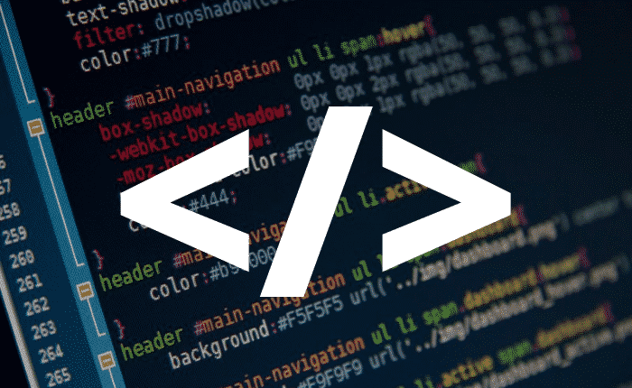

Professor: Orlando
Aulas: toda Quinta-feira (13:00 às 15:15)
A primeira vez que tivemos essa aula, eu não estava entendendo nada, pois ainda não tenho muito conhecimento sobre a área de informática, e o professor começou a falar sobre JavaScript, Linux… pra mim ele estava falando “bla bla bla…”, no começo foi (pelo menos pra mim) muito difícil de entender, mas depois com calma, fui entendendo. Nesse mesmo dia o professor foi explicando e logo já nos ensinou como fazer um site muito simples, mas mesmo assim não deixava de ser um site, tinha apenas título, uma imagem, e uma frase, foi bem divertido, uma experiência totalmente diferente de todas as outras que já vivi.
